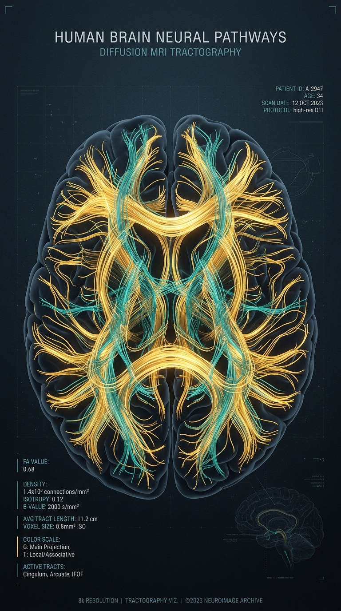
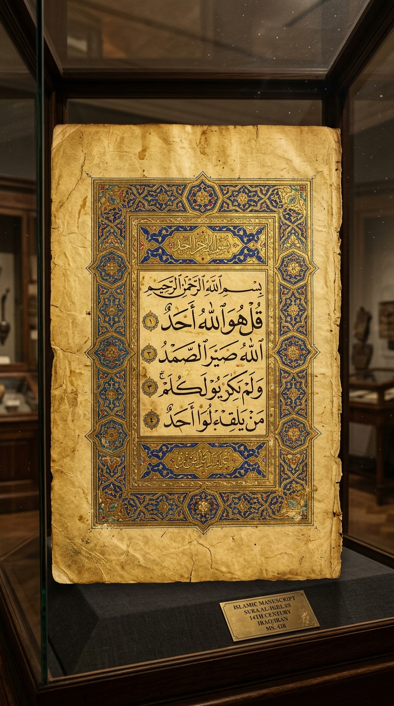

PARADIGM INQUIRY // THE FINANCIAL ILLUSION
ATM
PARENTING COGNITION · CRITICAL FLAW
AYAH BUKAN MESIN NAFKAH. INI BUKTI SAINS & ADAB.
Subjek: Neurosains Paternitas & Adab Pengasuhan
Fokus: Studi Yale University & Sunnah Nabawi
PARADIGMA UMUM: MESIN TRANSFER
DAMPAK AYAH ABSEN: +80% ANXIETY
Nafkah finansial tak pernah menggantikan presensi
RISIKO GANGGUAN EMOSI (AYAH ABSEN)
+80%
DATA HARVARD
KEKELIRUAN FATAL
KEKELIRUAN PARADIGMA AYAH
Tugas ayah tidak selesai saat nafkah ditransfer: ini kekeliruan fatal.

NEUROBIOLOGY // YALE CHILD STUDY CENTER
YALE
JARINGAN EMPATI: PREFRONTAL CORTEX
STATUS OKSITOSIN: SETARA IBU MELAHIRKAN
Otak ayah berubah secara biologis saat mengasuh
LONJAKAN HORMON OKSITOSIN
+140%
SURGE EMPATI
TERBUKTI SAINS
NEUROBIOLOGI PATERNITAS
Saat ayah memandikan dan menidurkan anak: sirkuit empati otak aktif seketika.
DEVELOPMENTAL PSYCHOLOGY // HARVARD CENTER
RESILIENCE
LATIHAN OTAK: KENDALI IMPULS & EMOSI
RESILIENSI STRES: +40% LEBIH STABIL
Bermain fisik bukan canda belaka—ini latihan ketahanan
STABILITAS REGULASI EMOSI
+40%
LEBIH TANGGUH
REGULASI TERUJI
PSIKOLOGI PERKEMBANGAN
Bermain fisik teratur dengan ayah: melatih ketahanan stres dan kendali emosi.

SUNNAH NABAWI // ADAB & PRESENSI KELUARGA
AR-RA'I
مَنْ لا يَرْحَمُ لا يُرْحَمُ
"Siapa yang tidak menyayangi, niscaya tidak akan disayangi."
Nabi ﷺ menggendong cucunya saat shalat berjamaah, membantah budaya jahiliyah yang gengsi mencium anak.
KONSEP AR-RA'I: PEMIMPIN JIWA & EMOSI
SURAH LUQMAN: DIALOG AYAH KE ANAK
Rasulullah ﷺ mendahulukan kasih sayang di atas formalitas
PERAN FUNDAMENTAL AYAH
AR-RA'I
PEMIMPIN JIWA
SUNNAH NABAWI
ADAB & KETELADANAN ISLAM
Dalam Islam, ayah adalah Ar-Ra'i: pemimpin jiwa dan pelindung emosional.
FINAL VERDICT // THE LIFETIME RECORD
PRESENSI
HADIR SECARA UTUH
PRESENSI NYATA MELAMPAUI SALDO REKENING
Anak tidak mengingat saldo tabunganmu—mereka merekam kehadiranmu
WARISAN TERBESAR SEORANG AYAH
KEHANGATAN TANGAN SAAT MEREKA TAKUT
PESAN ABADI SANG AYAH
Yang direkam anak seumur hidup: kehadiran dan kehangatan tanganmu.